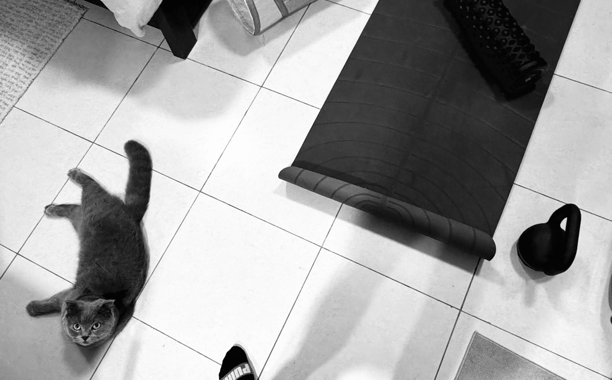
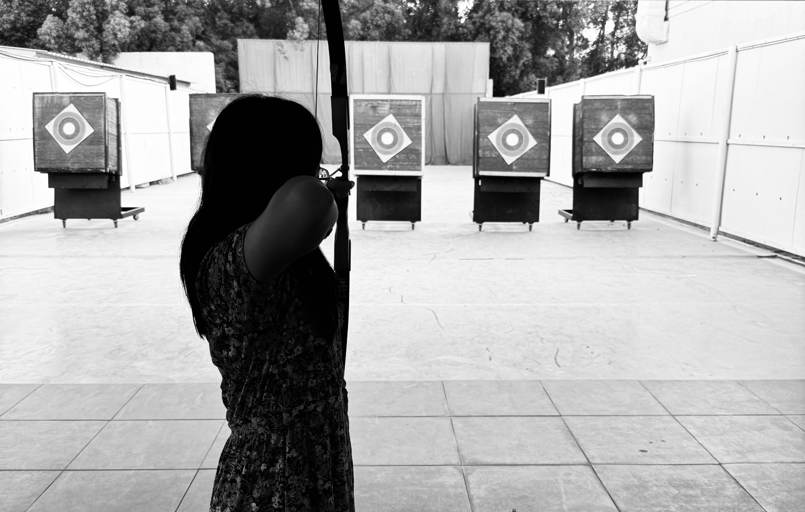
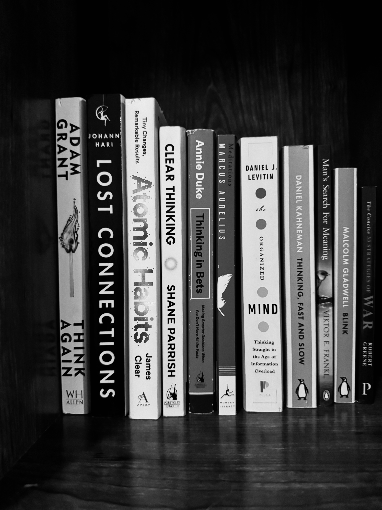
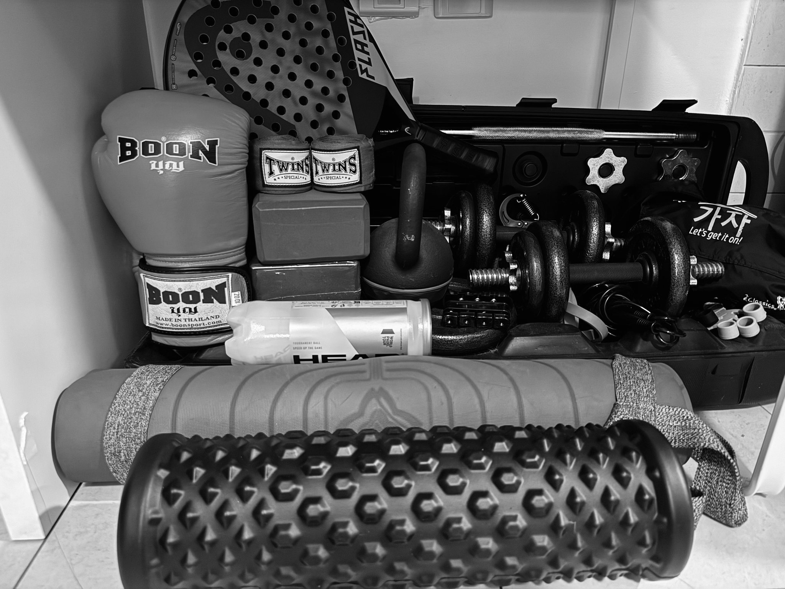
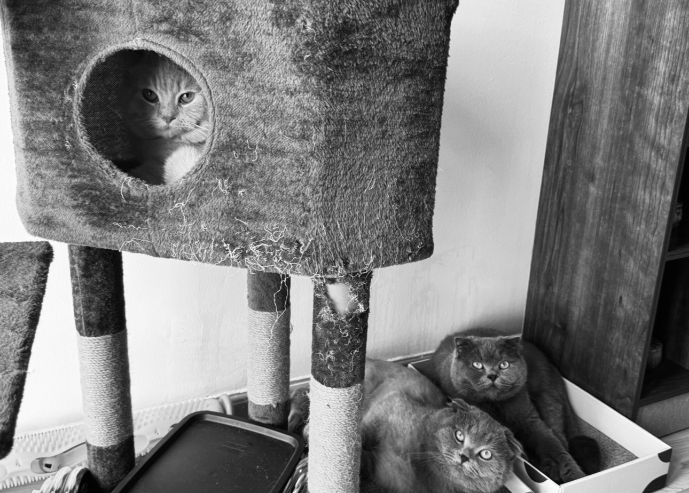

About Me
Name and Program
My Name is Zarah May Zafra, and I am pursuing a Master of Science in Information Systems (MSIS).
I am currently based in Dubai and work as an accountant in the aviation industry.
Why MSIS?
Through my exposure at work, I developed an interest in technology and in how it facilitates transfer of information for decision-making.
Furthermore, my interest grew when I became involved in a Robotic Process Automation (RPA) Project as a Subject Matter Expert.
The experience showed me the importance of understanding business processes and communicating requirements in a structured, organized, and effective manner.
My experience has also shown me that, in business settings, usability and human factors can sometimes be deprioritized in system development.
I have seen how well-designed systems can meaningfully improve the way people work, and conversely, how ineffective systems reduce efficiency and make work frustrating for the people who use them.
Along the way, I also realized that I genuinely enjoy learning about technology, exploring new tools, and creating simple automations that make my life easier, whether at work or outside of work.
These experiences motivated me to pursue the MSIS program.
Current Semester Schedule
| Subject |
Course Number |
Start - End Date |
Instructor |
| Programming and Modern Framework |
IS 7012 |
24-Aug-2026 - 10-Oct-2026 |
Brandan Jones |
| Database Systems |
IS 7032 |
24-Aug-2026 - 10-Oct-2026 |
Brett Starr |
| Systems Analysis & Design |
IS 7020 |
13-Oct-2026 - 05-Dec-2026 |
Robert Rokey |
Career Objectives
In the short-term, I believe the MSIS program will enhance my effectiveness in my current role by deepening my technical understanding and teaching me to to communicate business needs in a more structured and systems-oriented manner.
I hope to apply this knowledge to contribute more effectively to system design decisions and automation initiatives.
In the long-term, my plan is to pursue systems-focused roles such as Business Systems Analysts, Business Process / Systems Architect, Information Systems or Functional Consultant.
I am open to roles involving process automation, system implementation, and data integration.
I am especially keen to work between business users and technical teams, while reliably translating complex business realities into sustainable, integrated, and user-centered systems.
Strengths
Curiosity
I like to explore ideas or problems and get into the nitty gritty to understand how or why something is the way it is, and see how things connect.
Independence
I am comfortable with figuring things out on my own and learning things through practice or experimentation.
Analytical problem-solving
I like investigating problems, identifying their root causes, and finding practical solutions.
Structured and thorough
I like breaking complex things into smaller parts in order to gain understanding of all the important parts before moving forward.
I organize information, pay attention to details, and try to anticipate potential issues while keeping the big picture in mind.
Persistence
I tend to stick with things even when they are difficult, trying different approaches and learning along the way until I make progress.
Self-awareness
I spend time reflecting and examining my own tendencies, habits, and ways of thinking.
I like exploring different perspectives and I find that I am willing to rethink and reconsider my outlook as I gain new information.
Hobbies and Interests
Yoga

I enjoy yoga, particularly balancing and warrior poses.
I like how yoga combines strength, control, flexibility, and compels you to focus on the present.
Here's Yoga Journal to get started with yoga and find exciting poses to try.
Boxing
I enjoy boxing as it is both physically and mentally engaging.
It requires focus, coordination, and timing. I also like how it requires me to stay focused and react in the moment.
Visit the official U.S. national boxing governing body at
USA Boxing.
Archery

I enjoy archery because it requires discipline, concentration, precision, and consistency.
I like the challenge of making small adjustments to my technique and seeing how it affects the accuracy of each shot.
Learn more about the sport at
World Archery.
Psychology

I consider myself an introvert but I like to observe and understand people.
I like reading about personality, behavior, and motivation and exploring how emotions and perceptions influence the way people think and act.
I also find it interesting to connect what I read about psychology with what I observe in myself and others.
Some personality frameworks I enjoy exploring include MBTI
and
CliftonStrengths.
Other Interests
Other things I enjoy include playing computer games, strength training, as well as quieter activities such as reading, learning new tools or skills, and playing with my cats.


Thanks for taking the time to learn a little more about me! :)